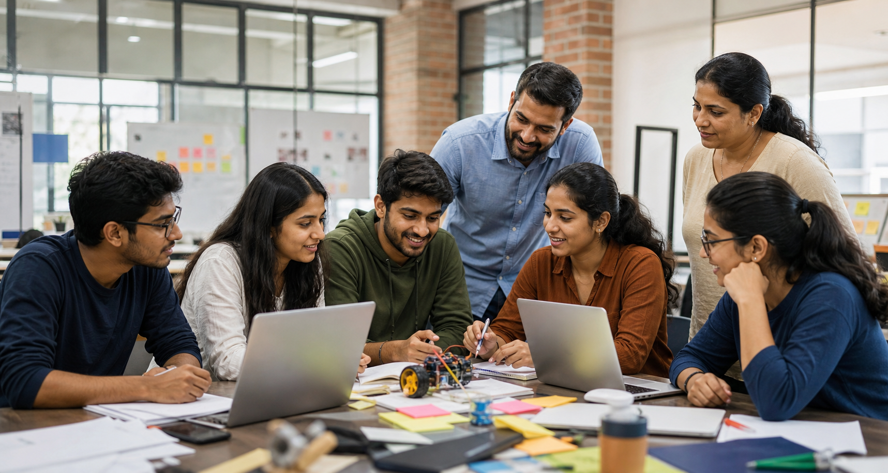

Ms. Nisha Shrestha
Event Coordinator
Responsible for the event program, guests, and partnerships.
Learn. Create. Connect.

Student Innovation Summit began as a small college project exhibition. It has grown into a larger learning event where students from different institutions can share ideas and learn from one another.
The 2026 summit focuses on practical learning, responsible innovation, teamwork, and solutions that can create a positive community impact.
Our mission is to give every student a welcoming platform to explore ideas, demonstrate skills, receive feedback, and develop confidence.
The summit is designed to be useful for beginners as well as experienced student creators. Participants can learn new subjects, improve presentation skills, and meet people with similar interests.
Event Coordinator
Responsible for the event program, guests, and partnerships.
Student Lead
Coordinates student volunteers, exhibitors, and competitions.
Workshop Coordinator
Manages workshop schedules, trainers, and participant support.
After attending the summit, students should feel more confident about sharing ideas, working in teams, and continuing to learn beyond the classroom.